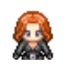
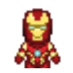
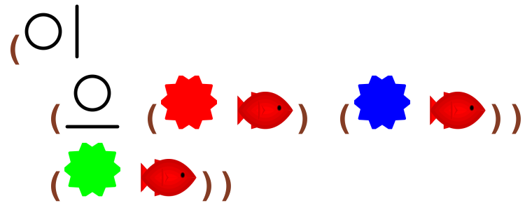

5 Hero
5.1 hero-0
read
Write code to make a spritesheet for Blackwidow.
code
#lang k2/lang/hero/basic blackwidow
In Ratchet:

5.2 hero-1
read
Write code to make a spritesheet for Ironman.
code
#lang k2/lang/hero/basic ironman
In Ratchet:

5.3 hero-10
read
Write code to make a game where Gamora is the hero, and there are four Gamora enemies too..
code
#lang k2/lang/hero/basic (start gamora gamora gamora gamora gamora)
In Ratchet:

5.4 hero-2
read
Write code to make a spritesheet for Gamora.
code
#lang k2/lang/hero/basic gamora
In Ratchet:
5.5 hero-3
read
Write code to make a game where Gamora is the hero.
code
#lang k2/lang/hero/basic (start gamora)
In Ratchet:

5.6 hero-4
read
Write code to make a game where Ironman is the hero.
code
#lang k2/lang/hero/basic (start ironman)
In Ratchet:

5.7 hero-5
read
Write code to make a game where Blackwidow is the hero.
code
#lang k2/lang/hero/basic (start blackwidow)
In Ratchet:

5.8 hero-6
read
Write code to make a game where Blackwidow is the hero, and Gamora and Ironman are enemies..
code
#lang k2/lang/hero/basic (start blackwidow gamora ironman)
In Ratchet:

5.9 hero-7
read
Write code to make a game where Ironman is the hero, and Gamora and Blackwidow are enemies..
code
#lang k2/lang/hero/basic (start ironman gamora blackwidow)
In Ratchet:

5.10 hero-8
read
Write code to make a game where Ironman is the hero, and Ironman is also an enemy..
code
#lang k2/lang/hero/basic (start ironman ironman)
In Ratchet:

5.11 hero-9
read
Write code to make a game where Ironman is the hero, and there are three Ironman enemies too..
code
#lang k2/lang/hero/basic (start ironman ironman ironman ironman)
In Ratchet: